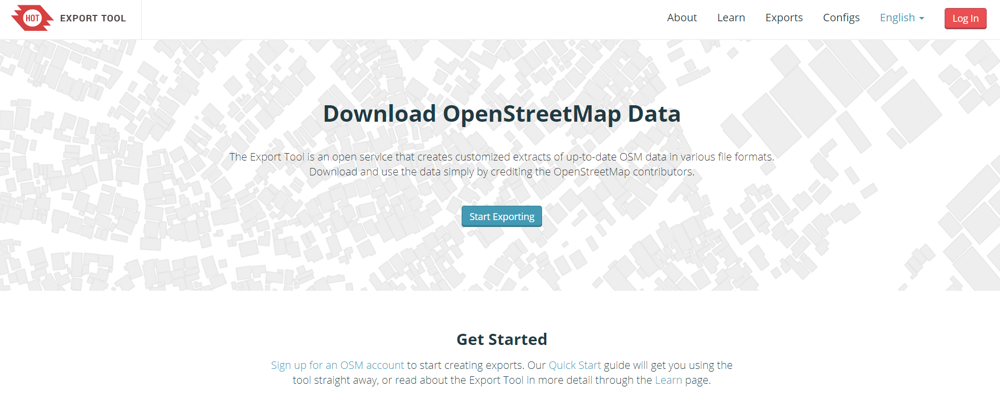
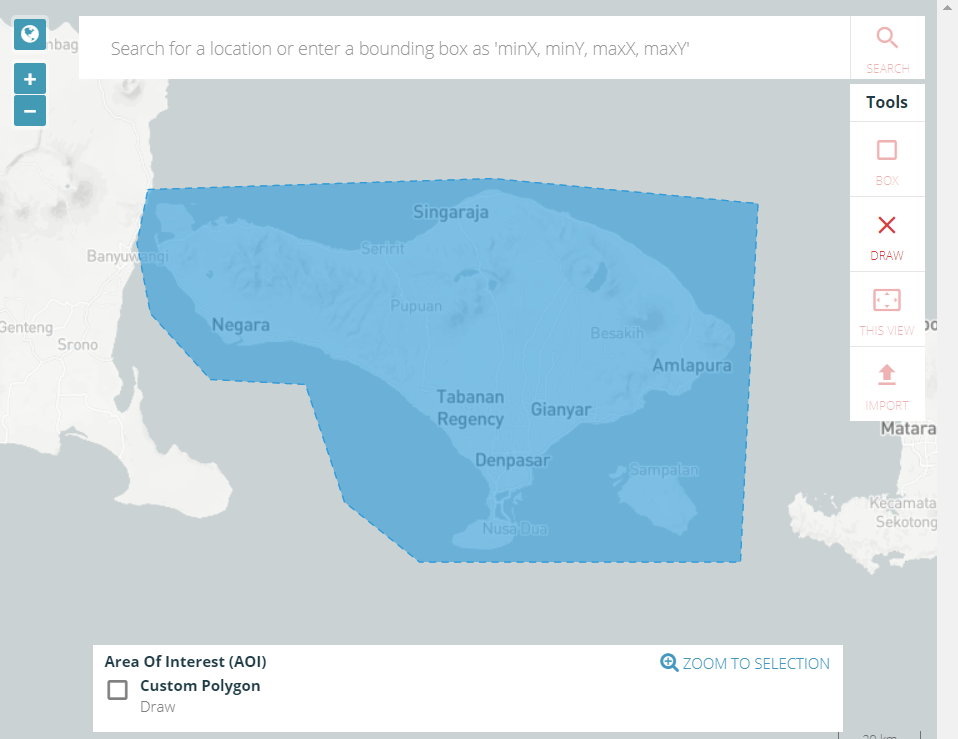

Download OSM Data using Export Tool
Objectives:
- To be able to explain the definition and function of Export Tools
- To be able to operate Export Tools
In this chapter, we can learn about how to download the OSM data that we have added and uploaded into OSM. The data can be used to analysis, customize with data symbology, create maps, and others depend on your necessary.
I. Export Tool Concept
The Export Tool is an open service that creates customized extracts of up-to-date OSM data in various file formats, such as ESRI shapefiles (.shapefile), google KML (.kml), GeoPackage (.gpkg) dan MBTiles (.mbtiles). We can select the area and specific categories that we necessary. Download and use the data simply by crediting the © OpenStreetMap contributors. Anyone can create a custom OpenStreetMap export with the Export Tool - just register an account. You can register with an OpenStreetMap account from OpenStreetMap.org and a valid email address.
II. How to using Export Tool
a. Login with OSM account
- Open your browser, and type this link https://export.hotosm.org

- The first we have login with your OSM account to using Export Tool. Click on Login in the right corner. The next click on ‘Authorize access to your account’ → Grant Access.
- To create a new project in Export Tool click on Start Exporting
- The Export Tool window will be displayed like the image below

b. Defining an area of interest
There are 5 ways to define an Area of Interest for your export:
-
Bounding Box: Use the “Box” tool to the right to click and drag a rectangle, or use the “Current View” tool to match the map's viewport.

-
Draw Polygon: Draw a freeform polygon. This must be a simple (not multi-polygon).

-
Upload: By uploading a GeoJSON polygon in WGS84 (geographic) coordinates. If you have not the GeoJSON data, you can refer to this chapter Using GeoJSON.

-
Search Bar: input a minX,minY,maxX,maxY string into the search bar. This will define a rectangular area of interest.
-
Current View: Use “Current View” to match the map's viewport.
The maximum extent of export on the Export Tool is determined by the density of OSM data in the defined area. The bounding box of the area can contain at most 10,000,000 OSM nodes. This limitation means that a 10,000 square kilometer box over a heavily mapped area like Western Europe or North America will likely be rejected, but an equal-sized box over a sparsely mapped area will be accepted by the Export Tool. If you need larger exports, please Contact Us or use an alternative resource such as downloads from Geofabrik or Mapzen.
c. Naming and Describing your Export
- Name (required): choose a short, descriptive name.
- Description: a long text body, perhaps describing what relevant features the export includes.
- Project: Helps to group together exports particular to a project, e.g. “PDC InAWARE Indonesia”
d. Choosing File Format
- Check at least one file format to export. To learn more about each individual format, read the documentation: Export Formats

e. Choosing Map Features
- For your first time using the export tool, it's recommended to use the Tag Tree, which curates a set of filters and tags for common map features. As an example, check the box “Buildings and Transportation → Roads” to create an export of all building geometries, as well as related data such as name and address keys.

f. Downloading your File
- The last step is the Summary Menu that will be displayed about the projects. Click the Create Export to starting the process

-
After you submit your export using Create Export, you will be redirected to the Export Detail Page, which shows a list of Export Runs. You will see the first run at the top of the page. It will be in one of the following states:
Submitted: The export is waiting to be processed. This should be brief, depending on the server load.
Running: The export is waiting to be processed. City-sized regions should be a few minutes - larger regions can take upwards of 20 minutes, depending on the density of OSM data.
Completed: Your export files are available for download. Each export format has a separate download link for its ZIP archive.
- If the status will be COMPLETED, we can download the data with a click on buildings_and-roads-bali-upate.shp.zip and save in your directory.

SUMMARY
We have learned about how to download the OSM data using Export Tool. We can open the data in the mapping software as for example QGIS (www.qgis.org). You also can use the data to calculate the quantities of infrastructures.